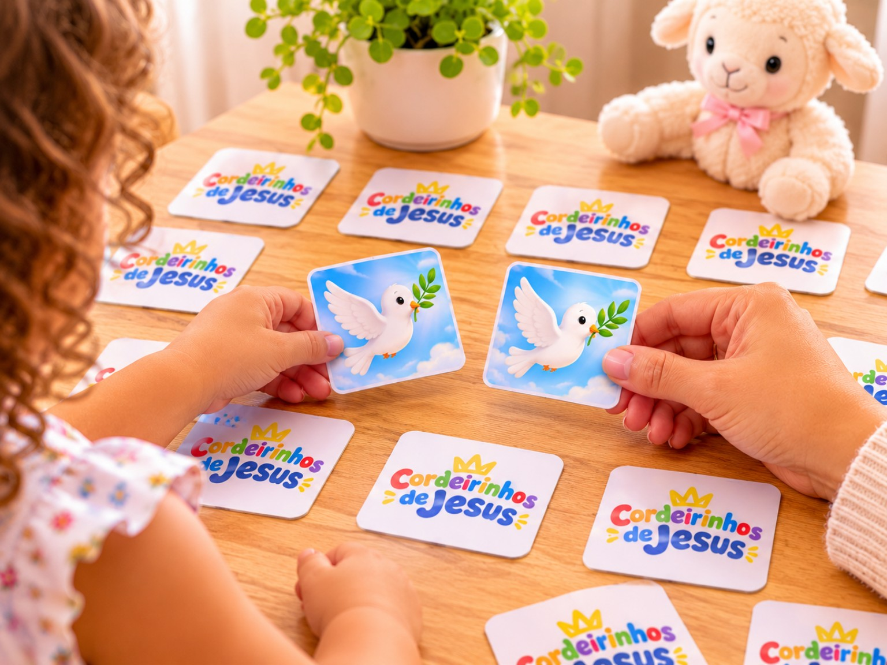
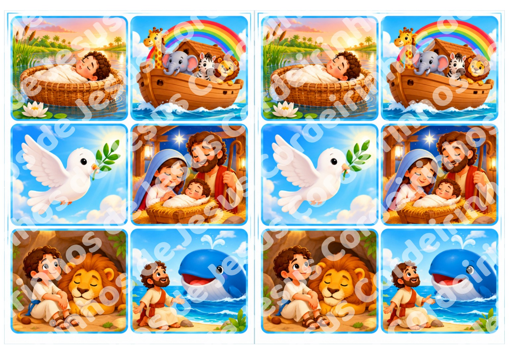

Material digital · Gratuito
Jogo da Memória Bíblico – 18 pares
Um jogo divertido com imagens inspiradas em histórias e personagens bíblicos. A criança procura os pares, exercita a memória e aprende brincando.
- Estimula memória e concentração.
- Desenvolve atenção e percepção visual.
- Incentiva raciocínio e associação de imagens.
- Proporciona momentos especiais entre pais e filhos.
Faixa etária: a partir de 2 anos, com supervisão de um adulto.
Valor
Grátis
Quero receber ♡